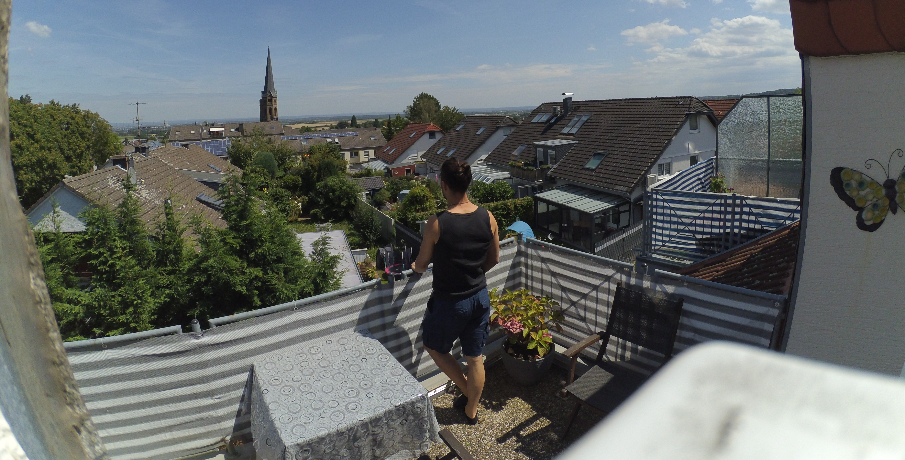

Falls du es eilig hast: Hier findest du die konkreten Angebote.
Mein Motto:
Emotionaler Ausdruck ueber Perfektion
Was ich damit meine:
Foto: Simon Rune Both
Natuerlich ist das Foto extrem gut gelungen und qualitativ sehr hochwertig, aber das ist nicht der Grund warum ich es liebe. Ich liebe dieses Foto, weil es mich an einen wunderschoenen Moment erinnert. Wir waren in Jordanien auf dem Weg zum Flughafen. Ploetzlich offenbart sich zu unserer Rechten dieser Sonnenuntergang. Voller Energie rannten wir ihm entgegen, bis wir dann anfingen zu rollen (Jiu Jitsu sparring). Als wir uns ausgepowert haben standen wir noch eine Weile da und haben die Aussicht genossen. Ich liebe dieses Foto, weil es eine Momentaufnahme einer tollen Erfahrung ist.
Das selbe funktion auch mit Musik!
Hier einige Beispiele:
Nachdem ich meine 'Nachbarn' einen Abend zuvor kennen gelernt habe, bin ich am naechsten Tag spontan vorbei gekommen und hatte nur Laptop und Mikrofon dabei. Kurze Zeit spaeter gab es diesen Song. Jeder der da war hat etwas dazu beigetragen. Wenn ich diesen Song hoere und die Augen schliesse, sehe ich die Menschen wieder vor mir Mit all den Gaegenstaenden die sie aus ihren Zimmern gebracht haben und Emotionen mit denen sie da waren.
Ich war mit meiner damaligen Freundin bei ihr in der WG in Quarantaene. Irgendwann kam uns der Impuls Songs zu machen. Das ist der den ich gemacht habe. Wenn ich diesen Song hoere, bin ich sofort wieder in der Stimmung in der ich damals war.
Es ist etwas sehr persoenliches und in jedem Satz steckt eine Anspielung auf diese Zeit drinne. Natuerlich verstehen nur wir beide alles.
Bei einem schoenen Date, nach einigen Stunden in meinem Zimmer wurde ihre Neugier zu gross und es fiel das tuepische "Kannst du Giratte Spielen? Spiel mal was!". Irgendwann habe ich angefangen es zu recorden.
Zu dem gibt es finde ich nicht viel zu sagen. Der Track macht einfach nur bock :)
Als ich gerade Bachata tanzen gelernt habe, war ich hart den Content der UK-Drill Szene am pumpen. Eines morgens bin ich aufgewacht und habe mich gefragt wie man diese beiden Welten kombinieren kann.
(Ich habe es bis heute nicht gefuehlt einen Text dazu zu schreiben. Vielleicht fuehlst Du es ja? Tob Dich gerne aus!)
Natuerlich sind diese Aufnahmen/Produktionen auf einem relativ hohen Niveau, aber das ist nicht der Grund warum ich sie gemacht habe und bis heute Liebe. Auf eine sehr persoenliche Art koennen sie mich aus meinem Kopf holen, mich in meinen Koerper bringen. Oder aber auch Erinnerungen in mir wecken und mich in diesen Baden lassen. Sie verbinden mich mit den Menschen die dabei waren und Einfluss auf den Entstehungsprozess genommen haben <3

Foto: Jocho
Ich moeche Dir helfen deine Vision auf Papier bzw. ins Mikrofon und in die Ohren anderer Menschen zu bringen.
Lito hat mir mal geschrieben und hatte eine Vision zu einem Beat. Ein paar Stunden spaeter habe ich ihm unter anderem dashier geschickt:
Manchmal mache ich auch einfach so Beats:
Manchmal werde ich auch eher nach Inspiration statt fertigen Produktionen gefragt. Beispielsweise schicke ich dann sowas zurueck:
Hier kommt es nicht selten vor, dass man einen Kompromiss eingehen muss zwischen, was gezeigt werden soll und was zu der Musik passt. Hier zwei Beispiele von mir:
(Der Drum and Bass Drop am Ende (3:39) war nicht Teil des Theaters... Das war mangelnde Impulskontrolle meinerseits :D)
Hier eine Komposition von mir die es leider noch(!) nicht in ein Film/Video geschaft hat:
Wenn Du dir eine Zusammenarbeit vorstellen kannst, trette gerne mit mir in Kontakt.
Abschliessend hier noch paar kurze Worte eines Grammy-Winning Musikers zum Thema Rolle der Emotionen beim Musik machen.